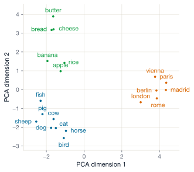
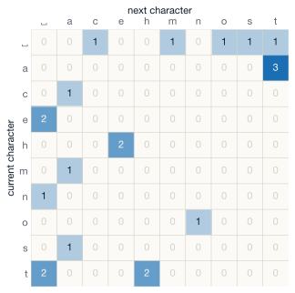

Lecture 8 — Treating text as data · embeddings · character models
August 12, 2026
≈ 5 min · shout it out
The bottleneck. The latent dimension is smaller than the input, so the network cannot pass the input through unchanged – it has to compress.
Sample new images from the latent space. The KL term in the VAE loss keeps the latent space organised around the origin, so a point drawn from \mathcal{N}(\mathbf{0}, \mathbf{I}) decodes to something sensible. A plain autoencoder has no such guarantee – most latent points decode to nonsense.
Gradients cannot flow through a random sampling step. Writing \mathbf{z} = \boldsymbol{\mu} + \boldsymbol{\sigma} \odot \boldsymbol{\epsilon} moves the randomness into \boldsymbol{\epsilon}, which has no parameters. The path from the loss back to \boldsymbol{\mu} and \boldsymbol{\sigma} is now deterministic, so backprop works.
A neural network takes numbers. Text is a sequence of characters / words / morphemes / utf-8 codepoints.
Tokenisation = the choice of what counts as one unit. The rest of the model — embeddings, attention, output layer — works on top of that decision.
Three granularities to choose from
Character
Word
Subword (BPE)
The string "hello" is, to your computer, a sequence of bytes: [104, 101, 108, 108, 111].
To a language model, after tokenisation, it’s a sequence of token ids — typically much shorter:
As characters (tokens = chars)
"hello world" → [7, 4, 11, 11, 14, 0, 22, 14, 17, 11, 3] (ids illustrative)
11 tokens needed for the string
As BPE (tokens = subwords)
"hello world" → [15339, 1917]
Two tokens. Each picks one row from a vocab of ~100,000.
(These are the actual ids GPT-4’s tokeniser, cl100k, assigns — and its vocab is ~100k.)
Note
The choice of tokeniser determines the cost (sequence length) and the unit the model learns to work with. We’ll see both on Day 11.
Take all unique characters in some corpus. Number them 0, 1, 2, ….
text = "to be or not to be"
chars = sorted(set(text)) # [' ', 'b', 'e', 'n', 'o', 'r', 't']
stoi = {c: i for i, c in enumerate(chars)}
itos = {i: c for c, i in stoi.items()}
encode = lambda s: [stoi[c] for c in s]
decode = lambda ids: "".join(itos[i] for i in ids)encode("to be") → [6, 4, 0, 1, 2].And that’s all we need!
Once each character/token has a unique integer id, we just need to figure out how to process sequences of them.
Corpus: "the cat sat on the mat"
Step 1 — unique characters
[' ', 'a', 'c', 'e', 'h', 'm', 'n', 'o', 's', 't'] — 10 distinct characters.
Step 2 — assign ids
| char | |
a |
c |
e |
h |
m |
n |
o |
s |
t |
|---|---|---|---|---|---|---|---|---|---|---|
| id | 0 | 1 | 2 | 3 | 4 | 5 | 6 | 7 | 8 | 9 |
Step 3 — encode
"the cat" → [9, 4, 3, 0, 2, 1, 9]
7 ids. The model has never seen the letter t — it has only ever seen the integer 9.
You might think to feed token id i as a one-hot vector \mathbf{e}_i \in \mathbb{R}^V:
Words have structure. “King” and “queen” should be close. “King” and “saucepan” should not. One-hot encodings know nothing about this.
We want a dense, learned, low-dimensional representation. That representation is called an embedding.
A mapping from token id i to a dense vector \mathbf{e}_i \in \mathbb{R}^d.
Implemented as a learnable embedding matrix \mathbf{E} \in \mathbb{R}^{V \times d}.
In PyTorch: nn.Embedding(num_embeddings=V, embedding_dim=d).
"the cat sat on the mat"
Corpus ids from the tokenisation slide
a and t then get the same treatment. The 30 numbers in \mathbf{E} are learned parameters.
The distributional hypothesis (Harris, 1954):
Words that occur in similar contexts have similar meanings.
Nobody defines “meaning” anywhere in this setup. Similar embeddings fall out of the prediction task on their own.
Word2vec, in one slide
Skip-gram
Given a centre word, predict its neighbours (within a window).
CBOW (continuous bag-of-words)
Given the neighbours, predict the centre word.
Why this works. To predict context, the model has to encode similarity-of-meaning into the embeddings — otherwise it can’t generalise across the millions of contexts in the training corpus.
GPT, Claude, and BERT all train embeddings the same way — as a side-effect of their primary task.
Skip-gram
One input, four predictions — this window alone contributes four cross-entropy terms.
CBOW
Four inputs, averaged, one prediction — the averaging is the bag: order inside the window is gone.
Both arrows point at the same table
Whichever direction you pick, the parameters being trained are the rows of \mathbf{E}. After millions of windows, sat’s row has been nudged towards the rows of the words it keeps company with.
The whole of word2vec (skip-gram), at the scale of our five-word vocabulary. Blue = input word; red = the neighbours to predict.
The left bundle of arrows is \mathbf{W}_{\text{in}} (5 \times 3): multiplying the one-hot by it selects one row. So the hidden layer is sat’s embedding. The right bundle is \mathbf{W}_{\text{out}} (3 \times 5), feeding the softmax.
Number of parameters
\mathbf{W}_{\text{in}}: 5 \times 3 = 15. \mathbf{W}_{\text{out}}: 3 \times 5 = 15. Total: 30 (no bias terms!)
At Google News scale (V = 3M, d = 300): 900M per matrix. The shapes-table entry earlier was \mathbf{W}_{\text{in}}.
At inference, we throw away the output
After training, row i of \mathbf{W}_{\text{in}} is word i’s embedding. We discard \mathbf{W}_{\text{out}} and the softmax.
The output layer, at real scale (Mikolov et al., 2013)
Our toy softmax had 5 slots. Google News word2vec has V = 3M.
The bill, per training pair
To normalise a softmax you must score every word: \mathbf{h}\,\mathbf{W}_{\text{out}} is 300 \times 3\text{M} = 900M multiplications — for one window, before one update. Multiply by billions of windows.
The fix — negative sampling
Swap “which of 3M words is the neighbour?” for a handful of yes/no questions:
sat, cat) → target yes.sat, quasar), (sat, invoice), … → target no.Each question is a logistic regression on the two words’ vectors. With k = 5: one update touches 6 \times 300 = 1{,}800 output weights, not 900M — half a million times less work.
The embeddings come out about as good — and since we discard the output side anyway, nothing of value is lost.
Word2vec embeddings, trained on a big corpus:
\mathbf{e}_{\text{king}} - \mathbf{e}_{\text{man}} + \mathbf{e}_{\text{woman}} \ \approx \ \mathbf{e}_{\text{queen}}
Analogies become vector arithmetic. “King is to man as queen is to woman” — the relationship is encoded as a direction in the embedding space.
The model wasn’t trained to do analogies. It learned them as a by-product of predicting context words.
Warning
Real-world embeddings encode all statistical regularities of their training corpus — including the unsavoury ones. We come back to this.
What does that \approx actually mean for two vectors?
We keep saying two embeddings are “close.” The standard measure is cosine similarity – the cosine of the angle \theta between them:
\cos\theta = \frac{\mathbf{a}\cdot\mathbf{b}}{\lVert\mathbf{a}\rVert\,\lVert\mathbf{b}\rVert}
A 2-D worked example
Let \mathbf{a} = (3, 4) and \mathbf{b} = (4, 3).
Now take \mathbf{c} = (4, -3): \mathbf{a}\cdot\mathbf{c} = 12 - 12 = 0, so \cos\theta = 0 — orthogonal, i.e. unrelated. (This is exactly what one-hot vectors are to each other.)
Try — 30 seconds in pairs Compute \cos\theta for \mathbf{a} = (1, 0) and \mathbf{b} = (1, 1).
Answer \mathbf{a}\cdot\mathbf{b} = 1\times 1 + 0\times 1 = 1; \lVert\mathbf{a}\rVert = 1 and \lVert\mathbf{b}\rVert = \sqrt{2} \approx 1.41.
\cos\theta = \dfrac{1}{1\times 1.41} \approx 0.71 — a 45° angle. Halfway between “identical” and “unrelated.”
A toy 2-D embedding space
Suppose, in our tiny space, the embeddings are:
\mathbf{e}_{\text{king}} = (2, 1), \quad \mathbf{e}_{\text{man}} = (1, 1), \quad \mathbf{e}_{\text{woman}} = (1, 2)
Step 1 — do the arithmetic
\mathbf{e}_{\text{king}} - \mathbf{e}_{\text{man}} + \mathbf{e}_{\text{woman}} = (2 - 1 + 1,\; 1 - 1 + 2) = (2, 2)
Call this result \mathbf{r} = (2, 2), with length \lVert\mathbf{r}\rVert = \sqrt{2^2 + 2^2} = \sqrt{8} \approx 2.83.
Step 2 — find the nearest word by cosine similarity
We compare \mathbf{r} to three candidate embeddings (each of length 5, so every denominator is 2.83\times 5 \approx 14.14):
| word | vector \mathbf{v} | \mathbf{r}\cdot\mathbf{v} | \cos\theta |
|---|---|---|---|
| queen | (4, 3) | 8 + 6 = 14 | 14 / 14.14 \approx 0.99 |
| rock | (0, 5) | 0 + 10 = 10 | 10 / 14.14 \approx 0.71 |
| fish | (3, -4) | 6 - 8 = -2 | -2 / 14.14 \approx -0.14 |
Very high similarity \mathbf{e}_{\text{king}} - \mathbf{e}_{\text{man}} + \mathbf{e}_{\text{woman}} points almost exactly at queen (\cos\theta \approx 0.99) — far closer than to rock or fish.
Character-level embeddings work the same way:
Each character gets a dense vector. Backprop tunes those vectors to be useful for the next-character prediction task.
| Model | Vocab V | Dim d | V \cdot d |
|---|---|---|---|
| Character LM (today’s lab) | 65 | 32 | ~2k |
| word2vec (Google News) | 3M | 300 | ~900M |
| BERT-base | 30,522 | 768 | ~23M |
| GPT-3 | 50,257 | 12,288 | ~617M |
| Llama-3-70B | 128,256 | 8,192 | ~1.05B |
What proportion of a model is the embedding matrix?
It depends how big the rest of the model is. GPT-2’s (50{,}257 \times 768 \approx 38.6M) is about a third of its 124M parameters whereas Llama-3-70B’s is ~1.5%.
Stop & check
Try — 60 seconds in pairs
We want a model that predicts next character from current character. We have a vocab of 65 characters and use 32-dim embeddings.
What is the shape of the embedding matrix? And what does each row of it do in the model?
Answer Shape: (65, 32).
Each row is the dense vector representation of one character. When the model receives character id i, it looks up row i — and uses that vector as the input to subsequent layers.
Rows are learnable. Backprop will pull characters that appear in similar contexts towards similar embeddings.
≈ 10 min · in pairs
Corpus
"the cat sat on the mat"
Treat each character as a token (including spaces). Treat the end of the string as a special end token.
Task 1: Tokenise
Task 2: Bigram counts
A bigram is a pair of adjacent characters.
Six minutes.
Unique characters 10 (including the space): ' ', 'a', 'c', 'e', 'h', 'm', 'n', 'o', 's', 't'.
Most common bigram — ('a', 't'), which appears three times: cat, sat, mat. (The pair ('t', 'h') appears only twice — the, the.)
Most frequent character — 't', counting every occurrence, appears five times: the, cat, sat, the, mat.
This count table is a model.
If you have P(c_b \mid c_a) for every pair, you can sample text:
It generates gibberish — but with structure. Next we’ll meet the smallest neural-network version of this.
High-dim vectors compressed to 2D
Embeddings live in \mathbb{R}^{50}, \mathbb{R}^{300}, higher — invisible to the eye.
But we can project them down to 2D using:
On the right: 20 words from GloVe (50-d vectors, trained on 6 billion tokens of Wikipedia + newswire), PCA to 2D.
The categories separate on their own — nobody told the model they exist.

The two PCA directions keep 55% of the 50 dimensions’ variance. And look at fish — pulled off the animal cluster, towards the food one. The corpus knows fish is also dinner (to some).
An important distinction
Static
"bank" in river bank and Bank of England has the same embedding.Contextual
"bank" in two sentences gets two different vectors.Static embeddings are most useful for retrieval, document similarity, social-science measurement. For generation you will want to use contextual embeddings.
Once you have a trained embedding matrix, you can:
Cluster documents by averaging token embeddings within each
Search by embedding query + corpus, returning the nearest neighbour — semantic retrieval
Classify — feed embeddings into a classifier for sentiment, stance, topic.
Compare documents using cosine similarity.
Embeddings are the glue of much of NLP!
The simplest recipe: average
To embed a sentence or a whole document: look up every word’s vector, take the mean.
A worked 2-D example
Suppose \mathbf{e}_{\text{great}} = (2, 1), \mathbf{e}_{\text{terrible}} = (-2, 1), \mathbf{e}_{\text{film}} = (0, 3).
The words great and terrible point apart: \cos\theta = \dfrac{-4 + 1}{\sqrt{5}\,\sqrt{5}} = -0.6.
The documents end up close: \cos\theta = \dfrac{-1 + 4}{\sqrt{5}\,\sqrt{5}} = +0.6 — the shared film dominates the average.
Bolukbasi et al. (2016) — Man is to computer programmer as woman is to homemaker?
The embeddings are “doing their job”: they reflect how words actually co-occur in the corpus
A model trained on these embeddings will inherit the bias.
Three approaches, all imperfect
Geometric debiasing
Find the “gender direction” in embedding space and project it out of occupation embeddings.
Data debiasing
Curate or rebalance the training corpus.
Document and live with it
Be explicit about what the embeddings encode.
Bias in social science applications
Using embeddings as measurement instruments can cut both ways: it can reveal real corpus patterns (even if biased) but it can also distort downstream measurement.
The paper is titled “Lipstick on a pig” — that’s the finding
Gonen & Goldberg tested the geometric fix from the last slide (Gonen & Goldberg, 2019):
The bias was never stored in one direction you can subtract away. It is spread across many dimensions of the space.
The practical upshot is that you should measure and report the bias in the embeddings you use.
We’re going to use the smallest possible embedding matrix — one row per character — as the input to a model that predicts the next character.
This is called a bigram language model
≈ 8 min · in pairs
A word2vec model is trained on a 10-billion-token English corpus. We extract embeddings of these words:
king, queen, prince, princesscat, dog, horse, fish, table, chairLondon, Paris, Berlin, Romewalking, running, swimming, eatingWithout computing anything, predict the answers
(king, queen) or (king, fish)?walking + cat - dog land — closer to which other word?Discuss in pairs. We’ll compare guesses.
? = prince.walking + (cat - dog) lands close to walking itself. Cat and dog are near neighbours, so their difference is a short vector — adding it barely moves you.Tip
Different models give slightly different geometry, so the details vary
Given the previous character, predict the next character.
Train on a chunk of text
And learn the distribution P(c_{t+1} \mid c_t).
This is the same task GPT solves, just on the smallest possible context (one character).
We don’t need labels as the text acts as its own signal
Forget neural networks for a moment. The simplest model:
Note
This is a fine baseline but the output will be awful: e.g. "hewenghadowt h".
The count table for the plenary corpus — every cell of it

Rows: current character. Columns: next. The corpus has 21 adjacent pairs; every one is tallied in exactly one cell.
Read row t: after t we saw h twice and ' ' twice, so P(\texttt{h} \mid \texttt{t}) = \frac{2}{4} = 0.5.
Row a is fully committed: all three counts in one cell, so P(\texttt{t} \mid \texttt{a}) = 1.
85 of the 100 cells are zero. Hold that thought for the next slide.
Take our starting sentence "the cat sat on the mat".
In this corpus, h appears twice — and both times the next character is e.
So the count table says:
Try it yourself What probability does the model give the string "the cat sat on the hat"?
Answer Zero. Since h → a never occurs in training, it has probability 0.
The model confuses “I never saw this” with “this is impossible”.
We can pretend we see every pair one extra time.
P(c_b \mid c_a) = \frac{\text{count}(c_a, c_b)}{\text{count}(c_a)} \quad \longrightarrow \quad P(c_b \mid c_a) = \frac{\text{count}(c_a, c_b) + 1}{\text{count}(c_a) + V}
The +V in the denominator (here V = 10 characters) keeps each row summing to 1.
Worked example — the h row
\text{count}(\texttt{h}) = 2, so every denominator is 2 + 10 = 12:
Row sum: \dfrac{3}{12} + 9 \times \dfrac{1}{12} = \dfrac{12}{12} = 1. Still a probability distribution!
The zero became small-but-nonzero. "the cat sat on the hat" now gets a low probability instead of no probability.
If one character of context is good, surely two is better — and ten better still?
The table blows up
With V = 27 characters (26 letters + space), a count table over n-grams has V^n cells:
| context | table size |
|---|---|
| bigram | 27^2 = 729 |
| trigram | 27^3 = 19{,}683 |
| 10-gram | 27^{10} \approx 2 \times 10^{14} |
The problem compounds if we use words: with V = 50{,}000 words, even the bigram table has 50{,}000^2 = 2.5 \times 10^9 cells – nearly all of them have count 0 (i.e. are sparse).
Counting cannot scale to long contexts whereas sharing parameters through embeddings and a network can.
Exactly the same model:
import torch.nn as nn
class Bigram(nn.Module):
def __init__(self, vocab_size):
super().__init__()
# one row per character; one column per next-character logit
self.token_table = nn.Embedding(vocab_size, vocab_size)
def forward(self, idx):
# idx is a (B, T) tensor of token ids
logits = self.token_table(idx) # (B, T, V)
return logitsThis is the smallest substantive language model.
A worked step
't' (id 9), target 'h' (id 4).{', a, c, e, h, m, n, o, s, t}.Tip
That’s it! The model learns “when you see t, weight h a little higher.” If we repeat this over the whole corpus, the bigram statistics emerge in the weights
def generate(model, start, max_new=200):
idx = encode(start)
for _ in range(max_new):
logits = model(idx[-1:]) # only need the last char
probs = softmax(logits, dim=-1)
next_id = sample(probs)
idx.append(next_id)
return decode(idx)Sampling is what gives generation its variety.
A knob on how “creative” the model is
Standard softmax: p_i = \dfrac{e^{z_i}}{\sum_j e^{z_j}}.
With temperature \tau: p_i = \dfrac{e^{z_i / \tau}}{\sum_j e^{z_j / \tau}}.
Low \tau (< 1)
High \tau (> 1)
Chat products often (used to) expose temperature as a hyperparameter: change the temperature and the output reads differently, without needing to change the weights.
How do we score a model?
Walk through a held-out string. At each position, ask the model: what probability did you give the character that actually came next?
\text{perplexity} = e^{\frac{1}{N}\sum_{t=1}^{N} -\log p_t}
Perplexity reads as: “the model is as unsure as if it were choosing uniformly among k options.”
A model that spreads probability uniformly over 27 characters gives every true character p = \frac{1}{27}, so the mean NLL is -\log\frac{1}{27} = \log 27 \approx 3.30, and perplexity is e^{3.30} = 27. As unsure as a 27-way guess.
A model reads a 4-token string. The probabilities it gave the four true next tokens:
0.5, \quad 0.25, \quad 0.5, \quad 0.25
Step 1 — turn each probability into a number of options
A fair coin gets the answer right with p = 0.5 — so p = 0.5 means as unsure as a 2-way guess. In general: 1/p options.
0.5 \to 2 \text{ ways}, \qquad 0.25 \to 4 \text{ ways}, \qquad 0.5 \to 2, \qquad 0.25 \to 4
Step 2 — average the guess sizes
Multiply them and take the 4th root — the geometric mean, the right average for numbers that multiply, as probabilities do:
\text{perplexity} = (2 \times 4 \times 2 \times 4)^{1/4} = 64^{1/4} \approx 2.83
2.83 options. The model made 2-way guesses on half the tokens and 4-way guesses on the other half, so its average uncertainty lands in between.
The formula on the last slide is this same computation, done with logs: mean NLL = \tfrac{0.693 + 1.386 + 0.693 + 1.386}{4} \approx 1.04, and e^{1.04} \approx 2.83. Logs just turn “multiply, then take the root” into “average, then exponentiate”.
Try it yourself What is the perplexity of a model that always puts probability 1 on the correct token? And of random guessing over 27 characters?
Answer
Always right: every NLL is -\log 1 = 0, so the mean is 0 and perplexity is e^0 = \mathbf{1}. I.e. no uncertainty at all.
Random guessing: every true token gets p = \frac{1}{27}, so perplexity is \mathbf{27}
Tip
Compute your lab bigram’s perplexity this afternoon and we can see whether tomorrow’s RNN beats it.
What it has
All the pieces of a real language model.
What it lacks
This is why we need recurrence (tomorrow) and attention (Monday).
Where you are at the end of Day 8
You can:
Two-thirds of the way through — where we are
Eight days down, four to go!
Goals
Train a character-level bigram language model on a small text corpus.
Steps:
Bigram model in PyTorch (5–10 lines).Stretch goals
Tip
The output should be terrible. That’s the point.
Lecture 9 — Recurrent neural networks · Thursday 13 Aug
Today’s bigram sees only the previous character — it can’t remember how a word/sentence began. Tomorrow we’ll give the network a memory of everything it has read so far.
Optional tonight: Karpathy, The Unreasonable Effectiveness of Recurrent Neural Networks (~20 min). Keep your bigram sample; we’ll race it against an RNN tomorrow.
ME324 · AI and Deep Learning · LSE Summer School
Social-science example — measuring concepts
Word embeddings let us measure abstract concepts.
Train embeddings on a large corpus of legislative speeches
Compute the average embedding of words like redistribution, taxation, welfare
Compute distance from each MP’s speech embedding to that “left-economic” direction
You get a scaled measure of left-economic emphasis per MP
This is how Rodriguez, Spirling & Stewart (2023) and others measure ideology from text alone.
A concept that’s hard to define directly often has a geometric expression in embedding space: